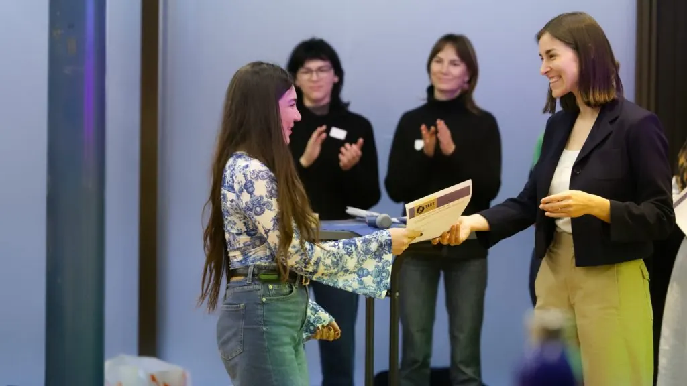
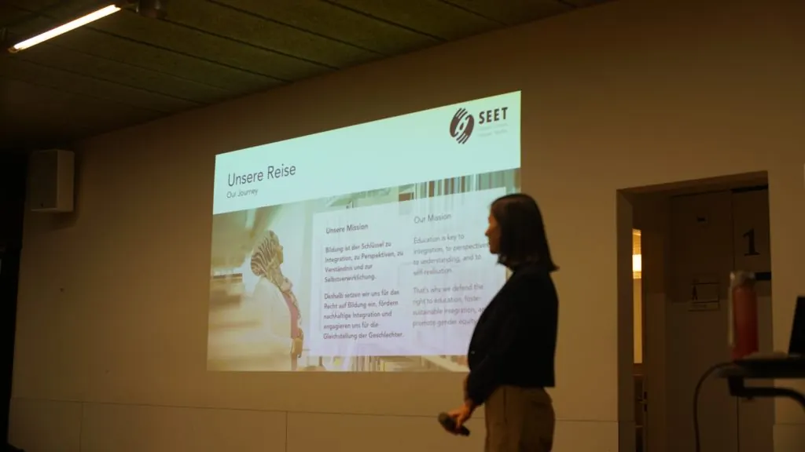

Der Jahresbericht 2025 von SEET ist jetzt online verfügbar!
The 2025 SEET Annual Report is now available online
Le rapport annuel 2025 de SEET est en ligne
Der Jahresbericht 2025 von SEET verdeutlicht, dass der Bedarf an SEETs Programm weiterhin dringend besteht, und dokumentiert die gemeinsamen Anstrengungen, die für seine Umsetzung erforderlich sind.
Die Begleitung von 39 Mentees bei gleichzeitiger Aufrechterhaltung hoher Qualitätsstandards war sowohl eine grosse Herausforderung als auch ein wichtiger Meilenstein. Ein persönliches Highlight war es, die zahlreichen und vertrauensvollen Beziehungen mitzuerleben, die sich im Laufe des Jahres entwickelt haben.

Trotz des Umfangs unserer Tätigkeiten konnten wir die Menschen hinter den Bewerbungen und Statistiken wirklich kennenlernen. Diese Verbindungen bleiben unsere grösste Belohnung und eine starke Motivation, unsere Arbeit fortzuführen.
Die Durchführung eines Programms in diesem Umfang erfordert weit mehr als die reine Programmarbeit. Hinter jedem erfolgreichen Mentoringtandem und jeder betreuten Mentee steckt ein breites organisatorisches Engagement.
Unser engagiertes Team für Human Capital und Legal Compliance rekrutiert und begleitet engagierte Freiwillige; unser Kommunikationsteam erzählt unsere Geschichte und inspiriert andere; unser Team für Strategie & Change Management hält unsere langfristigen Ziele im Blick; unser IT- und Wissensmanagement-Team stärkt Effizienz und Kontinuität; unser Finanz- und Rechnungswesen-Team stellt sicher, dass wir unsere Mittel optimal einsetzen; und unser Team für Fundraising und Partnermanagement baut die Beziehungen und die finanzielle Stabilität auf, von der unser Programm abhängt.
Ich bin unserem engagierten und talentierten Team sehr dankbar für die Zeit, Energie und die durchdachten Ideen, die sie täglich in die Stärkung von SEET investieren.

Für die kommende Runde haben wir mehr als 110 Bewerbungen erhalten, während wir derzeit rund 40 Teilnehmende unterstützen können. Viele weitere würden Beratung, Informationen, ein Unterstützungsnetzwerk und finanzielle Hilfe benötigen und verdienen.
Aus diesem Grund sind wir unseren Partner:innen und Spender:innen besonders dankbar für ihr anhaltendes Vertrauen, welches es uns ermöglicht, stabile Strukturen aufzubauen und unsere Reichweite zu vergrössern.
Wir sind auch unseren Mentor:innen dankbar für ihre wertvolle Zeit und ihr Engagement, sowie unseren Mentees für ihre Offenheit und ihr Vertrauen, das es uns ermöglicht, sie auf ihren Bildungswegen zu begleiten.
Nora Diethelm – SEET Präsidentin
Wenn Sie daran interessiert sind, SEET als zukünftige:n Mentor:in, Spender:in, Partner:in oder Freiwillige:n zu unterstützen, senden Sie uns bitte eine E-Mail an: seet@seet.ch
SEET’s 2025 Annual Report showcases how the urgent need for SEET’s programme remains, and documents the collective effort required to deliver it.
Supporting 39 mentees while maintaining high standards has represented both a significant challenge and an important milestone. One personal highlight was witnessing the many genuine and trusting relationships that developed throughout the year.
Despite the scale of our activities, we were able to truly get to know the individuals behind the applications and statistics. These connections remain our greatest reward and a strong motivation to continue our work.
Delivering a programme of this scope, to successfully support every mentor – mentee tandem, requires strong cross- organisational collaboration.
Our dedicated Human Capital & Legal Compliance team recruits and accompanies committed volunteers; Communications convey SEET’s story and inspire others; Strategy & Change Management keeps our long-term goals in focus; IT & Knowledge Management strengthens efficiency and continuity; Finance & Accounting ensures we use our funds most effectively; and our Fundraising and Partnership Management team builds the relationships and financial stability on which our programme depends.
I am deeply grateful to our dedicated and talented team for the time, energy, and thoughtful ideas they invest in strengthening SEET every day.
For the upcoming 2026/27 cycle, SEET received more than 110 applications, yet we are currently only able to support approximately forty participants. Many more need and deserve access to the guidance and information we provide, and to our community and financial support.
For this reason, we are especially grateful to our partners and donors for their continued trust, which enables us to build stable structures and expand our reach.
We are equally thankful to our mentors for their valuable time and dedication, and to our mentees for their openness and trust in allowing us to accompany them on their educational paths.
Nora Diethelm – SEET President
If you would be interested in supporting SEET as a future mentor, donor, partner or volunteer, please email us at: seet@seet.ch
Der Jahresbericht 2025 von SEET verdeutlicht, dass der Bedarf an SEETs Programm weiterhin dringend besteht, und dokumentiert die gemeinsamen Anstrengungen, die für seine Umsetzung erforderlich sind.
Die Begleitung von 39 Mentees bei gleichzeitiger Aufrechterhaltung hoher Qualitätsstandards war sowohl eine grosse Herausforderung als auch ein wichtiger Meilenstein. Ein persönliches Highlight war es, die zahlreichen und vertrauensvollen Beziehungen mitzuerleben, die sich im Laufe des Jahres entwickelt haben.
Trotz des Umfangs unserer Tätigkeiten konnten wir die Menschen hinter den Bewerbungen und Statistiken wirklich kennenlernen. Diese Verbindungen bleiben unsere grösste Belohnung und eine starke Motivation, unsere Arbeit fortzuführen.
Die Durchführung eines Programms in diesem Umfang erfordert weit mehr als die reine Programmarbeit. Hinter jedem erfolgreichen Mentoringtandem und jeder betreuten Mentee steckt ein breites organisatorisches Engagement.
Unser engagiertes Team für Human Capital und Legal Compliance rekrutiert und begleitet engagierte Freiwillige; unser Kommunikationsteam erzählt unsere Geschichte und inspiriert andere; unser Team für Strategie & Change Management hält unsere langfristigen Ziele im Blick; unser IT- und Wissensmanagement-Team stärkt Effizienz und Kontinuität; unser Finanz- und Rechnungswesen-Team stellt sicher, dass wir unsere Mittel optimal einsetzen; und unser Team für Fundraising und Partnermanagement baut die Beziehungen und die finanzielle Stabilität auf, von der unser Programm abhängt.
Ich bin unserem engagierten und talentierten Team sehr dankbar für die Zeit, Energie und die durchdachten Ideen, die sie täglich in die Stärkung von SEET investieren.
Für die kommende Runde haben wir mehr als 110 Bewerbungen erhalten, während wir derzeit rund 40 Teilnehmende unterstützen können. Viele weitere würden Beratung, Informationen, ein Unterstützungsnetzwerk und finanzielle Hilfe benötigen und verdienen.
Aus diesem Grund sind wir unseren Partner:innen und Spender:innen besonders dankbar für ihr anhaltendes Vertrauen, welches es uns ermöglicht, stabile Strukturen aufzubauen und unsere Reichweite zu vergrössern.
Wir sind auch unseren Mentor:innen dankbar für ihre wertvolle Zeit und ihr Engagement, sowie unseren Mentees für ihre Offenheit und ihr Vertrauen, das es uns ermöglicht, sie auf ihren Bildungswegen zu begleiten.
Nora Diethelm – SEET Präsidentin
Wenn Sie daran interessiert sind, SEET als zukünftige:n Mentor:in, Spender:in, Partner:in oder Freiwillige:n zu unterstützen, senden Sie uns bitte eine E-Mail an: seet@seet.ch